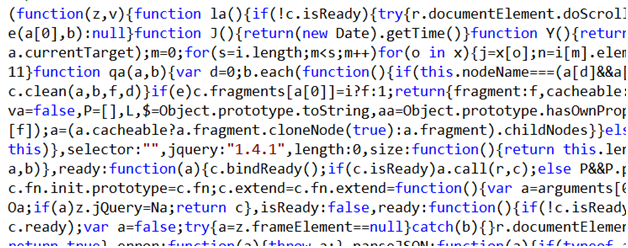
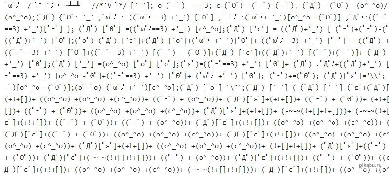
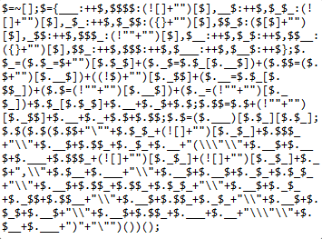
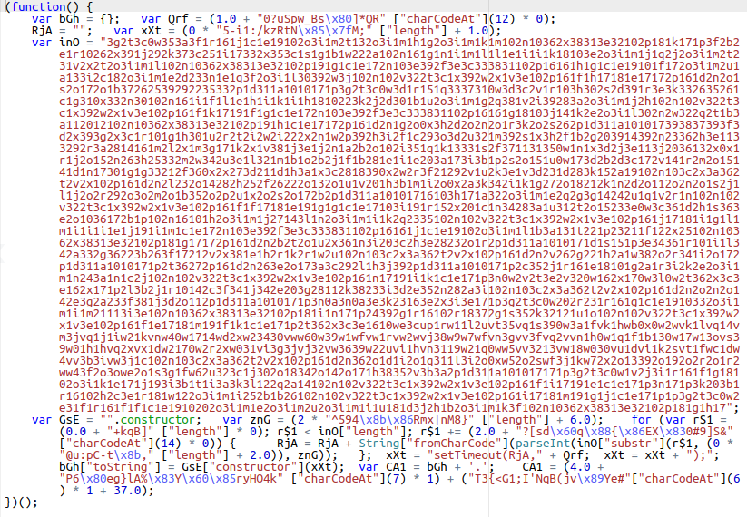

Процесс преобразования исходного кода программы в готовый продукт. Может содержать различные преобразования, список которых приведён далее.
Примеры сборщиков: Webpack, gulp, grunt, Parcel, esbuild, rollup.js
Преобразование кода из одной версии языка в другую версию того же языка, причём преобразование может быть в обе стороны: старая версия → новая версия или новая версия → старая версия (ES6+ → ES5 или ES3).
Пример: Babel
Объединение нескольких файлов в один (bundle). Используется для уменьшения количества запросов с клиента на сервер, применяется к CSS и JavaScript.
Обычно является функцией сборщика.
Оптимизация итоговых пакетов кода путём удаления неиспользуемых функций и модулей.
Обычно является функцией сборщика.
Уменьшение размера исходного кода путём удаления ненужных символов (и других преобразований, например, вычисления выражений) без изменения его функциональности. Применяется к JavaScript, CSS. Производится с помощью сборщиков или отдельных утилит.
Так же используется термин минимизация.
Минифицированным версиям файлов обычно дают расширение *.min.js.
Пример минифицированного кода – jquery.min.js:
Примеры минификаторов: Google Closure Compiler, UglifyJS.
Обфускация или запутывание кода — приведение исходного кода программы к виду, сохраняющему её функциональность, но затрудняющему анализ, понимание алгоритмов работы и модификацию.
Обфускация на уровне исходного кода (например, для JavaScript) включает в себя замену имён и форматирование текста программы.
Примеры обфусцированного кода:
  